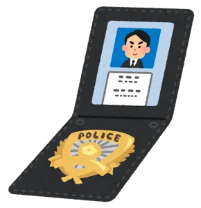
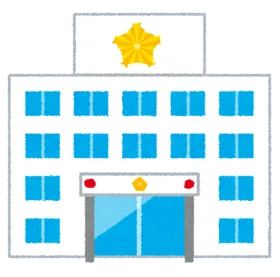

何のために受けるのか、分からない
昇任してどうなるのか。浮かぶのは、なりたくない上司の姿ばかり。
3つの質問に答えると、おすすめの講座をご案内します。
まず自分を知る

何のために受けるのか、迷っている方
300 円（税込）
45問から「力を発揮できる部署」「幹部適性」をAIが算出し、レポートが届く
試してみる

講座の中身を確かめたい方
無料
動画で解説した論文の模範解答PDF
最初の一歩

何から始めればいいか分からない方
29,800 円（税込）
基本四法の要点25本＋実務26本
筆記をしっかり
筆記試験を一通り固めたい方
通常 54,600円28%OFF
39,312 円（税込）
基本四法50本＋実務26本＋一問一答アプリ
実務編：警備・刑事の一部は制作予定なし
論文まで全部

筆記も論文も、まとめて対策したい方
通常 77,400円30%OFF
54,180 円（税込）
完全版＋論文対策42本
実務編：警備・刑事の一部は制作予定なし
価格・本数は2026年11月24日時点のショップの表示です。

試験と現場で本当に必要な所だけ。細かすぎる知識は削ってあります
スマホで、通勤の合間に。倍速・バックグラウンド再生もできます
見る期限はありません。何度でも繰り返せます
一問一答アプリで、すき間時間に確認できます（基本四法編・完全版・プレミアムパック）
ここに、
いただいた合格報告を載せます
視聴期限はありません。スマホでも視聴でき、倍速再生もできます。
STORES の決済の仕組みを使っています。カード以外のお支払い方法も使えます。
郵送物はありません。届くのは案内のPDFだけです。